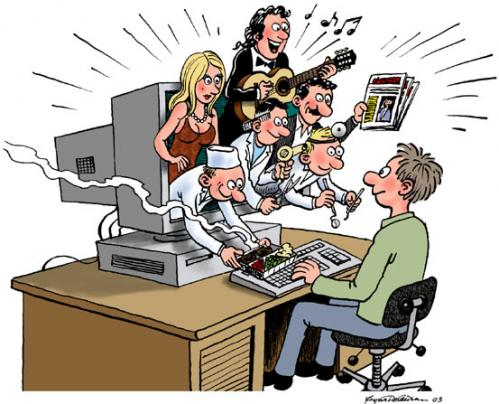

Uitleg: De cartoon gaat over het vroege internet en maakt een grap over hoe traag inbelinternet (dial-up) was. De leerling zegt dat hij in de "langzame klas" zit omdat zijn internet traag is. Het is grappig omdat hij zijn trage verbinding verwart met zijn prestaties op school. De cartoon laat zien hoe belangrijk internet werd, zelfs voor school.

Uitleg: Het internet probeert hedendaags vaak jou aandacht erbij te houden en jou op elke manier te helpen. Je kan dat ook zien door de verschillende personen in het scherm. Zoals de chef of het nieuws op een krant. Vroeger was dat allemaal niet natuurlijk en was het internet meer voor met elkaar te kunnen communiceren.